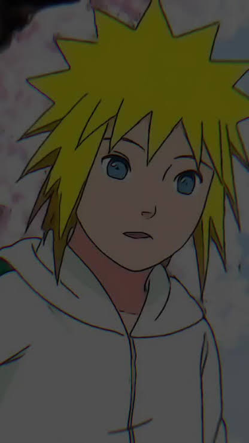
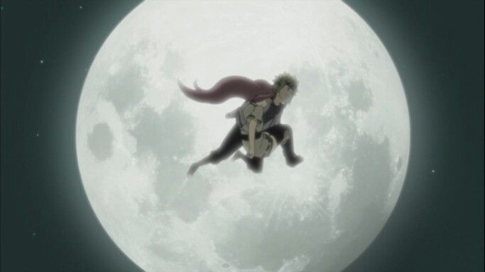
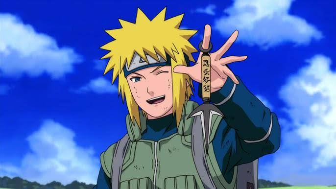
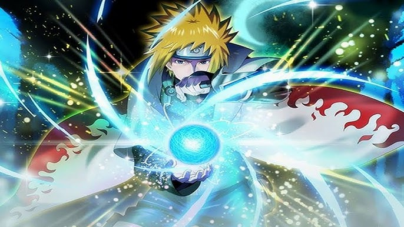
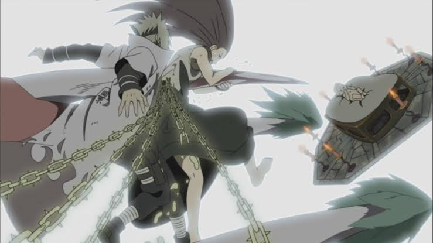

The Hidden Prodigy
Entering the Konoha Academy with a dream to become Hokage, Minato was a calm, exceptionally talented boy. While others initially doubted his quiet nature, his brilliant ninja mind was already miles ahead of his peers.

Entering the Konoha Academy with a dream to become Hokage, Minato was a calm, exceptionally talented boy. While others initially doubted his quiet nature, his brilliant ninja mind was already miles ahead of his peers.

When Kushina was kidnapped by cloud ninja, Minato was the only one to notice the trail of her vibrant red hair. He tracked them down under the moonlight, rescued her, and sparked a lifelong bond.

Rising swiftly to become a elite Jonin, Minato took charge of Team Minato. He guided Kakashi, Obito, and Rin through the brutal conflicts of the Third Shinobi World War, teaching them the value of teamwork.

Mastering the legendary Flying Raijin and inventing the Rasengan, he earned the name 'Yellow Flash'. Fearing his presence, enemy villages issued an absolute 'flee on sight' order to their forces.

Stepping up as the Fourth Hokage, Minato defended Konoha from the masked man and the Nine-Tails. In a final, heroic act, he chose the ultimate sacrifice—sealing the beast into his newborn son, Naruto.